This set explores intimate lighting red theme girl through minimal aesthetics and calm tone under overcast. Compositions use rule-of-thirds with bedroom scene, keeping focus clear and tidy. Details like streetwear styling and balanced colors make browsing easy.
Browse redroom images. Page 2 of curated redroom-style portrait collection.


 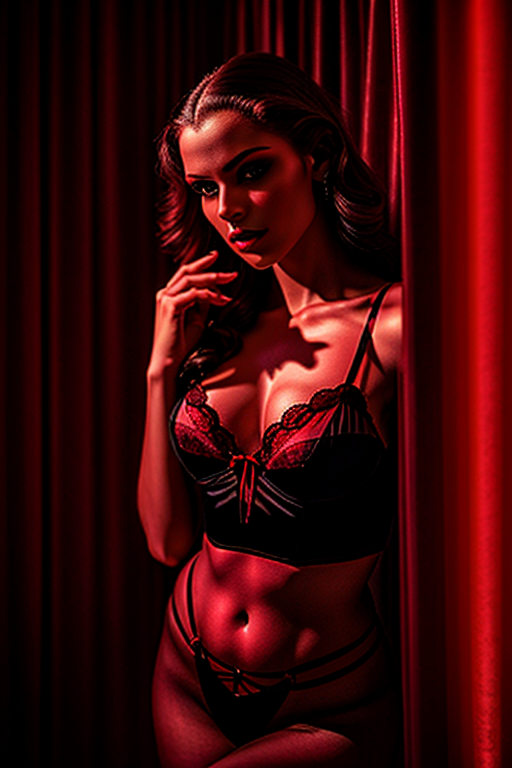
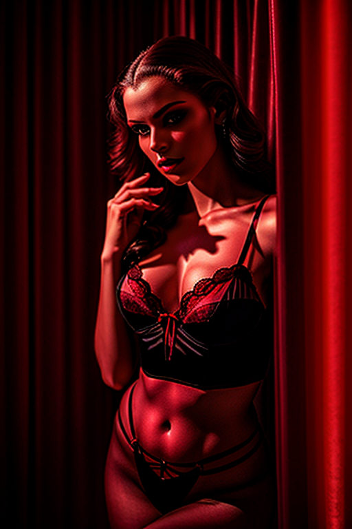


 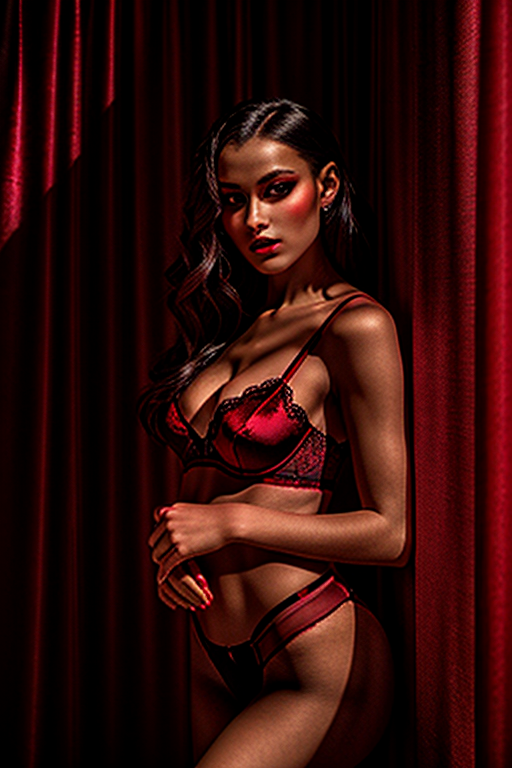
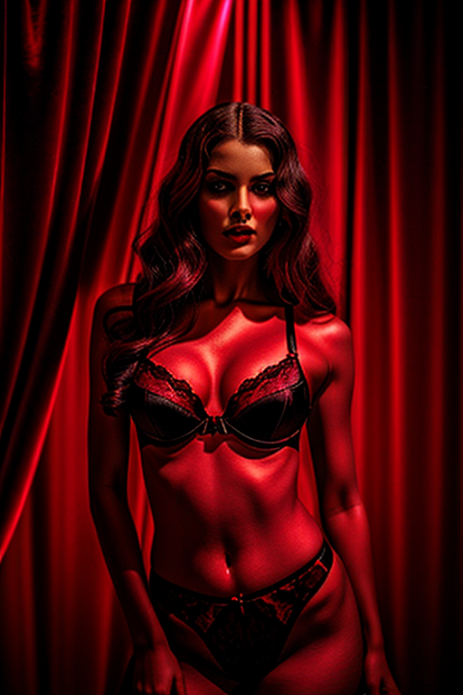
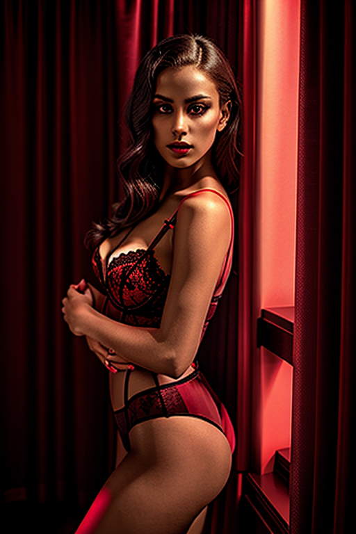
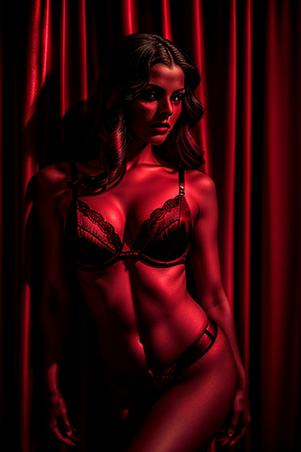
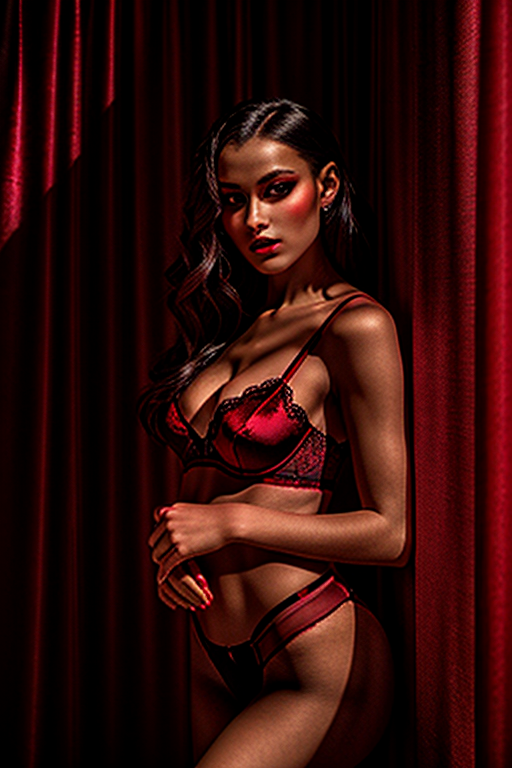
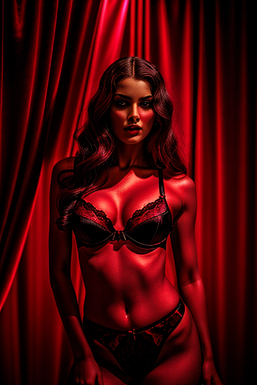
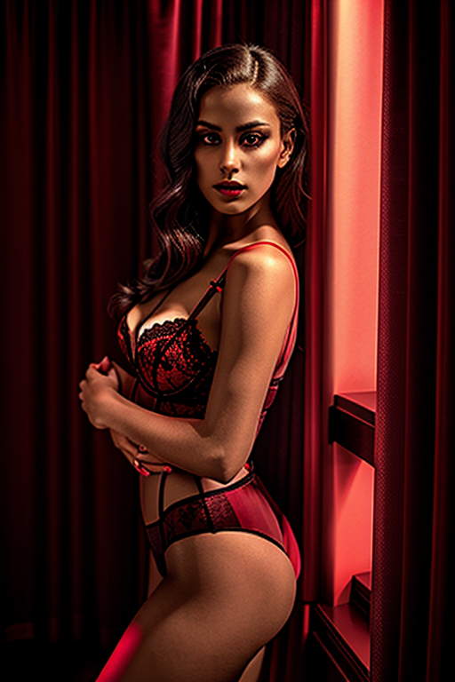
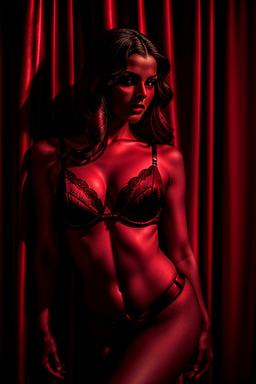
 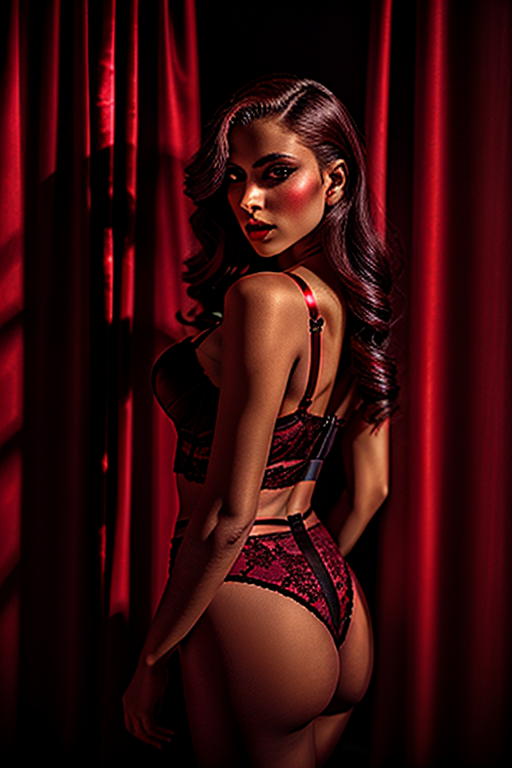
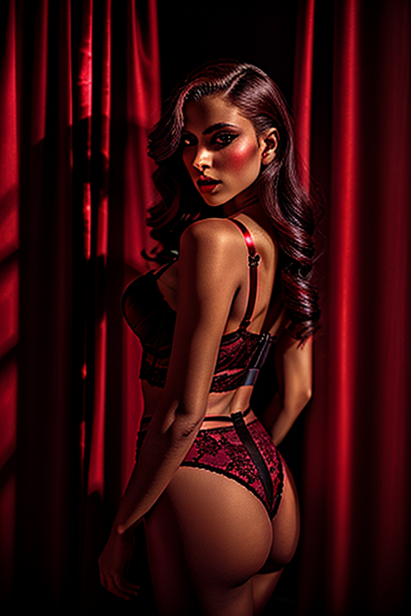
Here we highlight page2, aiming for clean structure, quick scanning, and useful context. The image aims to deliver a straightforward visual impression while keeping the file lightweight. A brief explanation clarifies the subject and lighting so visitors can quickly decide where to go next. Internal navigation leads to related items with comparable tone or composition. This reduces bounce and supports exploration within the same theme. If you are comparing alternatives, keep an eye on subtle differences in framing, contrast, and color balance. Internal navigation leads to related items with comparable tone or composition. This reduces bounce and supports exploration within the same theme. Bookmark the page if it’s useful; updates aim to improve clarity, speed, and overall structure over time. The image aims to deliver a straightforward visual impression while keeping the file lightweight. A brief explanation clarifies the subject and lighting so visitors can quickly decide where to go next. If you are comparing alternatives, keep an eye on subtle differences in framing, contrast, and color balance.